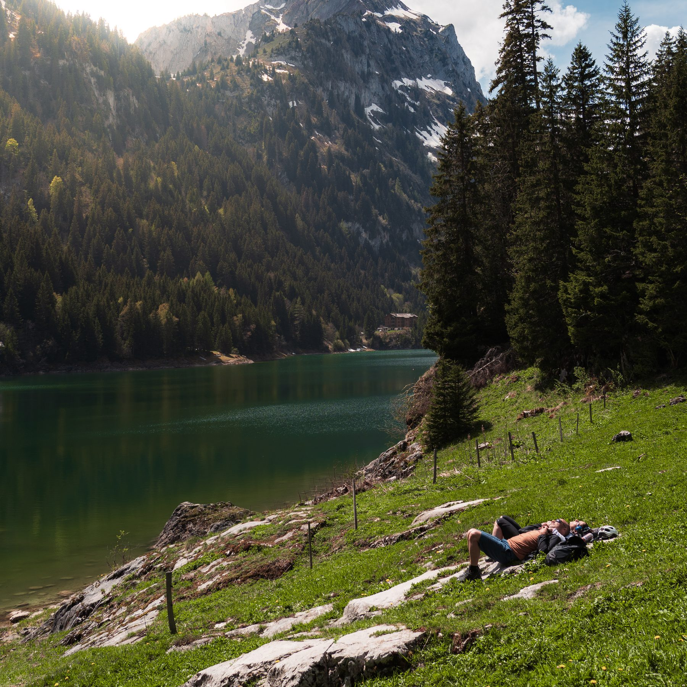
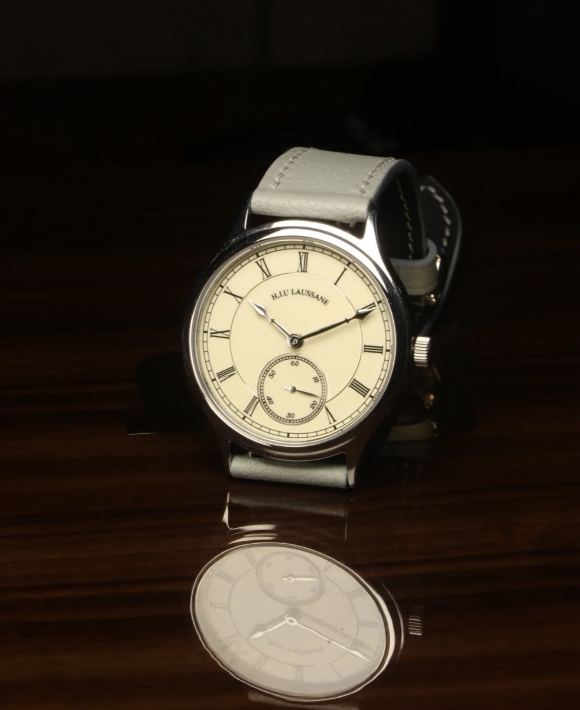
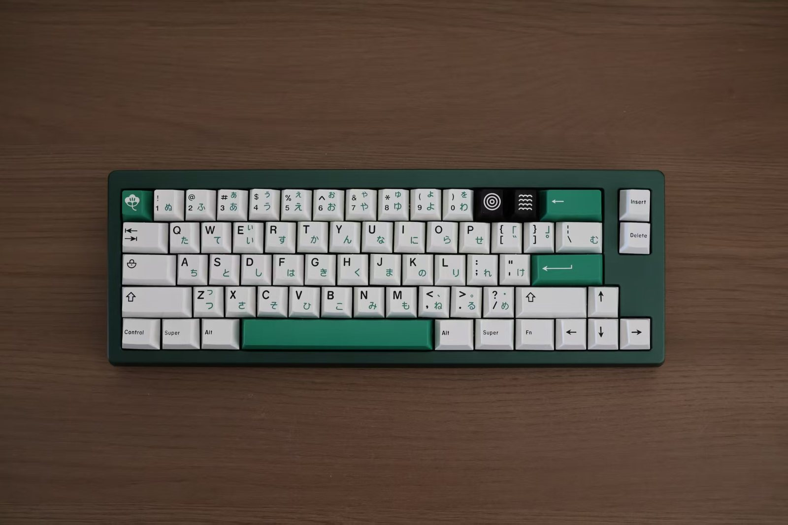
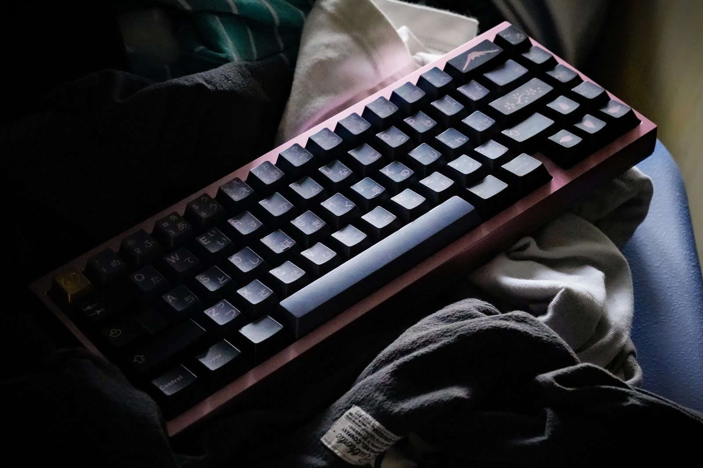

Photography
Small observations, kept visual.
I like photography because it rewards patience without making a big speech about it. A small photo page keeps a few frames I like.

Open the galleryPhysics PhD student at EPFL
I am currently a PhD student in physics at EPFL. Before coming to Lausanne, I earned my BSc in Physics at Southern University of Science and Technology, then completed my MSc in Physics at the Niels Bohr Institute, University of Copenhagen.
My research interests sit around biophysics and active matter. I develop bottom-up models to describe active systems, and I am familiar with, and currently working in, continuum and multiphase-field frameworks. I focus on biological systems with phenotypic heterogeneity, including bacterial colonies and eukaryotic cell tissues, and I see these systems as testing grounds for broader non-equilibrium theories of complex systems.
Outside academia, my interests are broad, including photography, fusion jazz, and simple design.
Background image generated with OpenAI Image2.
About
I like theories that have to survive contact with real life. Cells change states, bacteria grow in uneven neighborhoods, and tissues make decisions without a central conductor. That is exactly the kind of physical situation I find beautiful.
In the biological systems with phenotypic heterogeneity that I care about, the units actively consume energy at the microscopic scale and break detailed balance, giving rise to rich non-equilibrium dynamics. They can also change their mechanical properties in response to the environment, then reshape that environment in return. These feedbacks and adaptations are part of what makes the systems so hard to understand.
It is a demanding playground for frontier ideas in active matter: active turbulence, defect-mediated dynamics, motility-induced phase separation, non-reciprocal couplings, and more. I study how phenotypic heterogeneity enters these theories as internal state variables that couple to motility, growth, adhesion, and active stress, shaping collective dynamics far from equilibrium.
Life
Photography
I like photography because it rewards patience without making a big speech about it. A small photo page keeps a few frames I like.

Open the galleryMusic
I like the warm, modern looseness of Nujabes and iwamizu: beat-driven music with jazz color, soft edges, and enough space to think inside.



Craft Collection
Watches
I am a watch enthusiast without the fantasy budget. So I designed my own watch and worked with a factory to make it real: a small object somewhere between engineering, taste, patience, and restraint.
Keyboards
Keyboards are one of my core productivity tools in daily research and work, and I take them seriously. I enjoy collecting keyboards with excellent visual balance and tactility, especially designs with restrained colors placed in a carefully balanced way.
Contact
I am always happy to hear from people thinking about living matter, active systems, photography, music, crafted objects, or some odd intersection of the above.
Email me